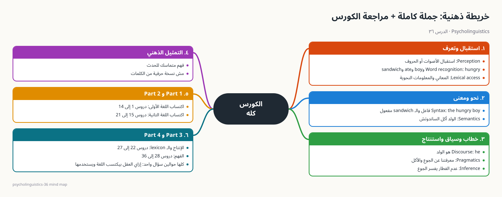

آداب الإنجليزية
: قواعد وجرامر وشعر وأساطير
⭐
0
🔥
استمر!
🏆
Psycholinguistics 36: جملة كاملة من الأول للآخر + مراجعة الكورس
📊
المستوى: B1
الدرس 36
🧠
كورس Psycholinguistics
📄 حمّل PDF الدرس
📝 ملخص الدرس (عربي) PDF
📝 Lesson Summary (English) PDF
🧠 الخريطة الذهنية PDF
🧠 شوف الخريطة الذهنية للدرس

→
الدرس اللي قبله
كل دروس الكورس